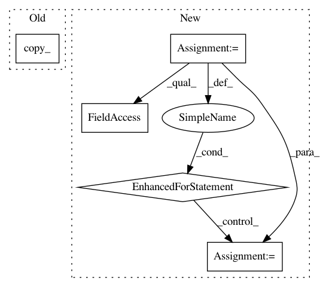

03a57decde62c76783ef7e2288bd61bc87f6e266,fairseq/optim/fp16_optimizer.py,FP16Optimizer,step,#FP16Optimizer#Any#,168
Before Change
if not p.requires_grad:
continue
numel = p.data.numel()
p.data.copy_(self.fp32_params.data[offset:offset+numel].view_as(p.data))
offset += numel
def zero_grad(self):
Clears the gradients of all optimized parameters.
After Change
self.wrapped_optimizer.step(closure)
// convert params back to FP16
for group in self.wrapped_optimizer.optimizer.param_groups:
group["params"] = group["params"].params // unwrap from ConvertToFP32
for p in group["params"]:
p.data = p.data.half()
if p.grad is not None:
p.grad.data = p.grad.data.half()
def zero_grad(self):
Clears the gradients of all optimized parameters.
self.wrapped_optimizer.zero_grad()
self._grads_are_scaled = False
In pattern: SUPERPATTERN
Frequency: 3
Non-data size: 5
Instances
Project Name: pytorch/fairseq
Commit Name: 03a57decde62c76783ef7e2288bd61bc87f6e266
Time: 2018-12-24
Author: myleott@fb.com
File Name: fairseq/optim/fp16_optimizer.py
Class Name: FP16Optimizer
Method Name: step
Project Name: pyprob/pyprob
Commit Name: 5ee892637d801457c48f5d5c47f319e7ccc537fb
Time: 2017-04-04
Author: atilimgunes.baydin@gmail.com
File Name: modules.py
Class Name: Artifact
Method Name: loss